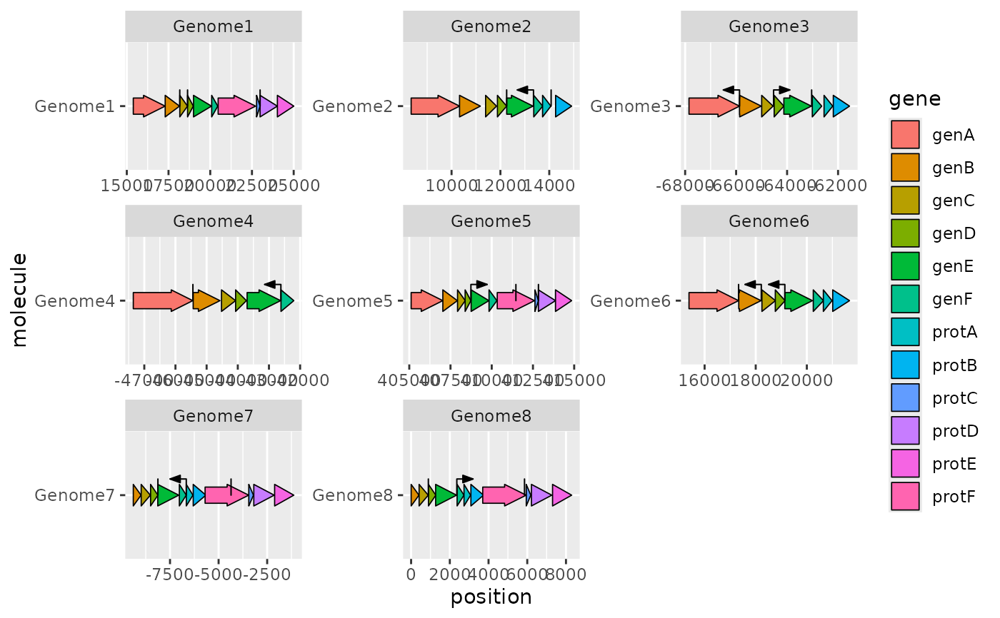

geom_feature() draws lines to indicate the positions of point genetic
features, for example restriction sites, origins of replication or
transcription start sites.
As standard for ggplot2. inherit.aes is set to FALSE by default, as features are not likely to share any plot aesthetics other than y.
grid::unit() object giving the height of a feature
above the molecule line. Can be set as a negative value to draw features
below the line. Defaults to 3 mm.
grid::unit() object giving the width of a feature
(distance from the elbow to the tip of the arrow). Only relevant for
oriented features. Defaults to 3 mm.
grid::unit() object giving the width of the
arrowhead indicating the direction of an oriented feature. Only relevant for
oriented features. Defaults to 2 mm.
Features are drawn as vertical lines extending from the horizontal line
representing the molecule. The position of the feature is expressed with the
x aesthetic. Optionally, the forward aesthetic can be used to specific
an orientation for the feature (e.g. the direction of transcription), in
which case an angled arrowhead will be added. The forward aesthetic
assumes that the x-axis is oriented in the normal direction, i.e. increasing
from left to right; if it is not, the values in forward will need to be
inverted manually.
x (required; position of the feature)
y (required; molecule)
forward (optional; if TRUE, or a value coercible to TRUE, the feature will be drawn with an arrowhead pointing right, if FALSE, pointing left, if NA, the feature will be drawn as a vertical line)
alpha
colour
linetype
size
ggplot2::ggplot(example_genes, ggplot2::aes(xmin = start, xmax = end,
y = molecule, fill = gene)) +
geom_gene_arrow() +
geom_feature(data = example_features, ggplot2::aes(x = position, y = molecule,
forward = forward)) +
ggplot2::facet_wrap(~ molecule, scales = "free")
